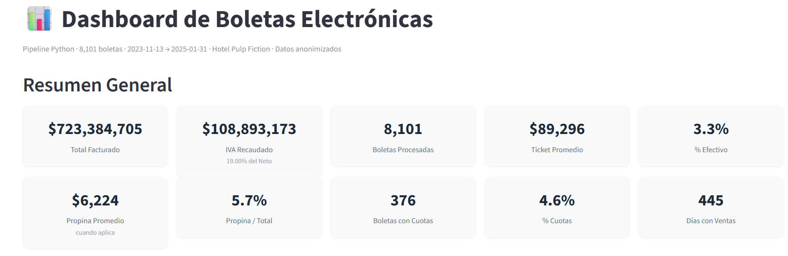
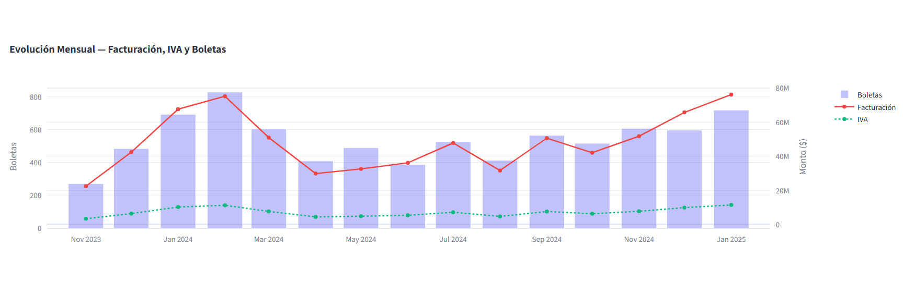
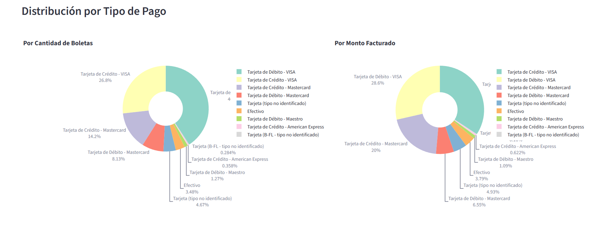
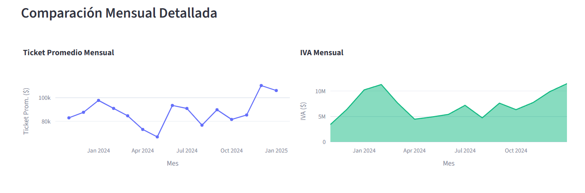

Hola, soy
Ingeniero Civil Industrial · Data & BI Specialist
Automatización de procesos, análisis de datos y business intelligence — datos reales, resultados reales
Ingeniero Civil Industrial de la Universidad de La Frontera y fundador de CS Asesorías. Me especializo en automatización de procesos contables y tributarios, gobierno de datos y visualización con Power BI.
Mi trabajo combina datos reales de clientes reales con Python, SQL y Excel/VBA para transformar información compleja en decisiones claras.
Actualmente colaboro en un proyecto ANID en la Universidad Católica de Temuco, diseñando dashboards Power BI e implementando gobierno de datos para indicadores institucionales con metodología SMART.
Universidad Católica de Temuco
Diseño de dashboards Power BI para indicadores institucionales. Implementación de gobierno de datos con metodología SMART. Facilitación de mesas de trabajo con actores clave.
CFT Estatal de La Araucanía
Automatización con Excel y Power BI. Implementación de ERP SIGSE. Capacitación a usuarios en BI. Documentación de procesos SIAC.
CS Asesorías Ltda.
Automatización de procesos contables y tributarios. Bot para descarga SII. Declaraciones juradas y reportes tributarios. Gestión de bases de datos de clientes.
Holding de Inversiones INDER
Análisis de cartolas bancarias y cruce con libros contables. Elaboración de DDJJ 1820 y 1829. Informes de peritaje técnico para SII.
pandas, pdfplumber, Plotly, Jupyter, automatización de extracciones
Power BI (Avanzado — U. de Chile), Streamlit, visualización interactiva
SQL, Access, Excel avanzado, Power Query, Power Pivot, VBA Macros
SII, DDJJ (1820, 1829, 1847, 1926), HyperRenta, Boletas Electrónicas
ETL pipelines, regex, GUI (tkinter), ERP SIGSE, bots SII
Indicadores SMART, flujogramas, glosarios, SIAC, calidad institucional
Pipeline de Extracción y Análisis de Boletas Electrónicas
Pipeline que procesa 7,912 PDFs de boletas electrónicas desde la pasarela de pagos Transbank, los transforma en un dataset gold de 8,101 registros con 28 campos, y genera un dashboard interactivo de 4 páginas para análisis de negocio hotelero.

Overview — KPIs y evolución mensual
Análisis Temporal — Heatmap día×hora
Pagos y Costos — Débito/Crédito/Efectivo
Detalle — Tabla filtrable